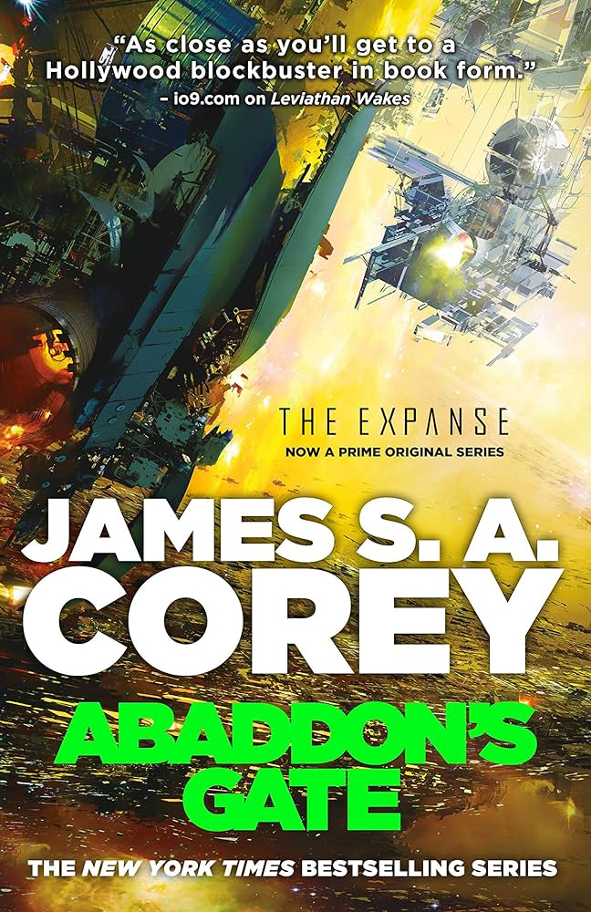

I'm currently reading The Expanse saga by James S.A. Corey. Right now, I'm on book 3, Abaddon's Gate. It's a sci-fi series set in the future that is as realistic as possible. Humans have colonized the entire solar system, and it comes with all the politics that would develop between the humans tht inhabit Earth, Mars, and the Asteroid Belt. You can download a digital version of it, along with the other books in the series, at Anna's Archive for free. If you prefer a physical copy, I recommend searching on Thrift Books.
